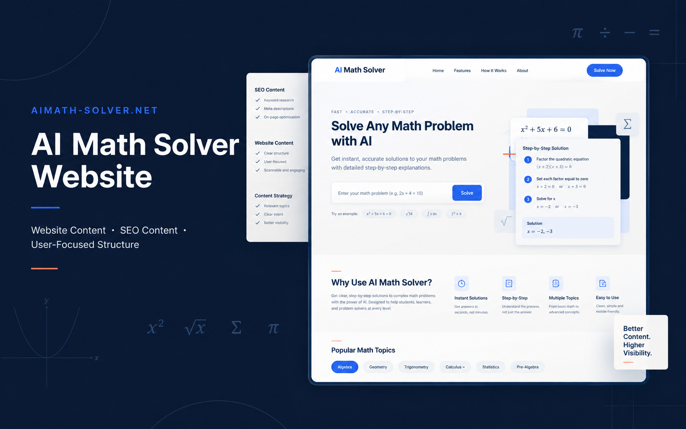
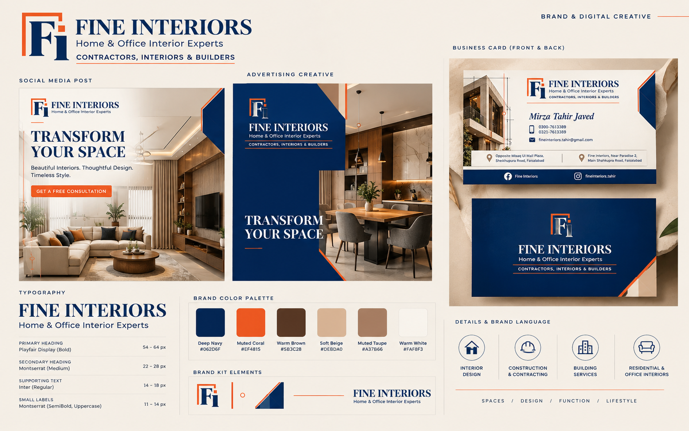

AIMath-Solver.net
Website content project focused on explaining an AI-powered math platform through clear, engaging copy.
View case study →Helping brands and businesses create clear, engaging, and search-friendly content that connects with their audience.
I focus on content that is useful to readers, aligned with its purpose, and structured for the digital environment.
Learn more about my approach →From website pages to SEO content and editing, explore the services designed to make ideas clearer.
Search-friendly content written with clarity, relevance, and reader intent in mind.
Explore services →Clear website copy that helps visitors understand what a brand offers.
Explore services →Focused refinement for clarity, consistency, flow, and readability.
Explore services →A focused selection of portfolio projects. Project context is presented accurately without invented results.

Website content project focused on explaining an AI-powered math platform through clear, engaging copy.
View case study →
Brand identity and creative design project featuring social media creatives, advertising design, business card design, typography, color palette, and brand kit elements.
View case study →Explore samples by content type, with the focus kept on clarity, structure, and usefulness.
Browse writing samples →Tell me what you need and we can start with the content goal, audience, and scope.